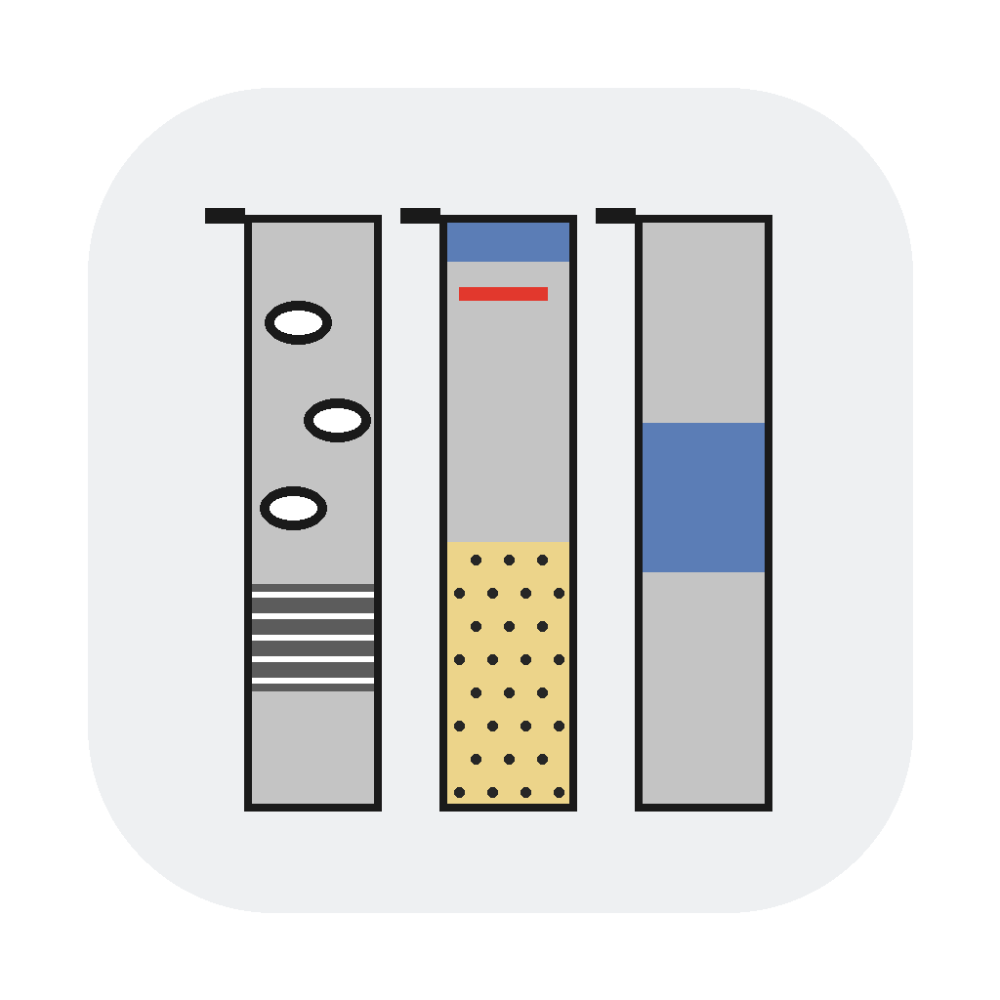

Excel のデータから地質柱状図を描くブラウザ用ツールです。インストール不要で、Windows・Mac・タブレットのブラウザで動きます。データはブラウザの中だけで処理され、どこにも送信されません。
コア記載（区間・構造・含有物）から、コアを横に並べた柱状図を描きます。
各ツールの「テンプレートExcelを保存」で入力用の Excel を作り、記入して読み込みます。地層用の入力例は strata_sample.xlsx です。Illustrator 用スクリプト（.jsx）は、Illustrator の「ファイル → スクリプト → その他のスクリプト…」で実行すると .ai として保存できます。